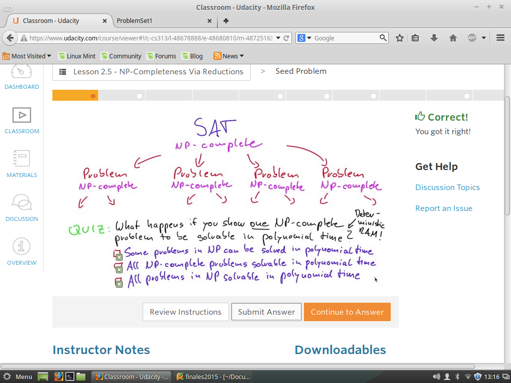
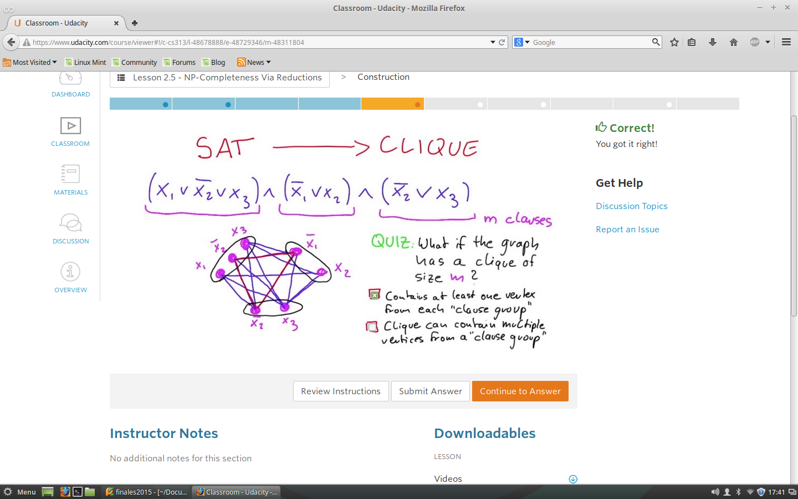
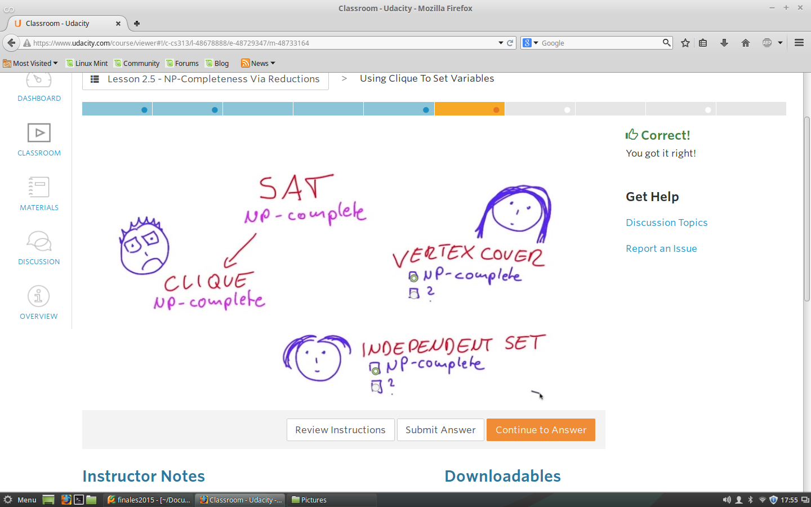
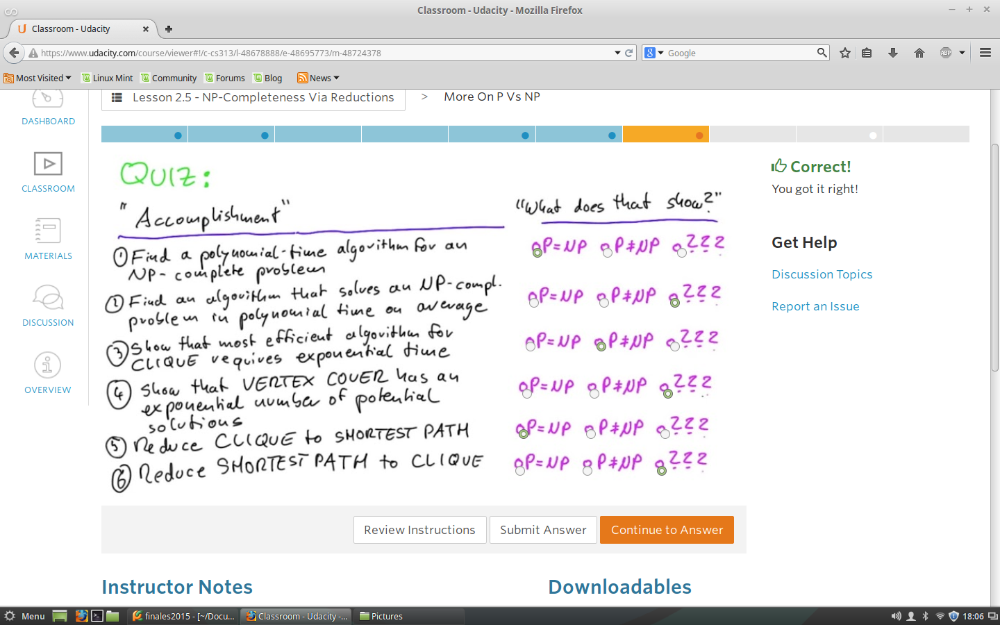

NP- Completo Vs Reducciones
Algunos Problemas de NP-Completos pueder ser Reducidos en tiempo Polinomial a SAT
Por medio de Tres Ideas.
Primero: Algunos problemas NP pueden ser resueltos en Tiempo polinomial
por una RAM NO-Determinista
Segunda:Debe haber un algoritmo de tiempo polinomial usando -> If_Better
Tercera IDEA: Ver que algunos algoritmos pueden ser codificados como na formula Booleana.
Teorema de Cook-Levis
Quiz 1 -Examinando Solucion de Problema

Quiz 2 -Solo Tiempo exponencial
Que sucede si un problema NP-Completo solo es solucionable en tiempo Exponencial?
Que puede inferirse a partir de dicha premisa.
Quiz 3 - Covertir de SAT -> CLIQUE
Para lograr tal transformacion se hace necesario el uso de Clausulas que son agrupamientos de la Formula Boolena,
estas represnta un conjunto de vertices.
Partiendo de este conocimeinto, sse procede a pintar las Aristas entre los vertices.
FIbalmense se observa el grafo obteniedo un CLIQUE

Quiz 4 -Usado CLIQUE - SET
Realizando la conversion de una Formula Boolena bien formada a CLIQUE, .
Donde se obtuvo que es tambien NP Completo, por lo tanto esto es una mala noticia para Bob.
Recuerde que los problemas de Bob, Alice y Carol estan estrechamente relacionados.

Quiz 5 - P Vs NP
Al idea es mostarat¿r que tan probable es que se cumpla una de las siguientes Afirmaciones:
P=NP
P!=NP
Finalmaende se plantea un par de situaciones y verificar a que tipo de Suposicion inicial se cumple o no se sabe.

Quiz 6 - Multitud de Problemas
Desde el punto de vista de las Ciencias de la Compuatcion se puede decir que
Problema P no es equivalnte a NP
Quiz 7 - Finalmente Propiedades Formula
La idea es determinar apartir de una Algoritmos N completo, convertirlo a
SAT. Teniedo encuenta algunas propiedades de Formula Booleana de la cual permite
Tomar deciociones y hallar equivalencia para tener control del algoritmo respecto
a dichas propiedades.